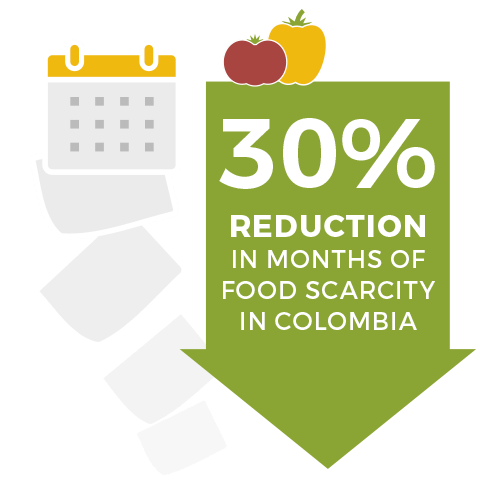
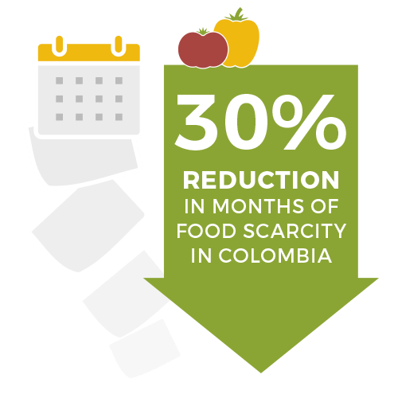

70 S Winooski Ave Ste 1W #312 Burlington, VT 05401 USA Phone (802) 497-3304 Tax ID: 27-2267267

We partner with coffee-farming communities in Latin America to cultivate a food-secure future. Our co-op partners and the thousands of coffee-farming families they represent are working to put good, healthy food on their tables every day.
We help coffee-growing communities strengthen local food systems, promote sustainable farming practices, diversify family livelihoods, and cultivate local leadership.

 

Rosibel is a participant in our organic farmers market program with Nicaraguan coffee cooperative SOPPEXCCA.
70 S Winooski Ave Ste 1W #312 Burlington, VT 05401 USA Phone (802) 497-3304 Tax ID: 27-2267267